Linein 应用详细设计说明
术语和缩写词
解释 |
缩写和术语 |
|---|---|
LINEIN |
line-in 音频输入 |
总体设计
需求概述
LINEIN应用主要实现的功能包括：
实现linein音频信号播放;
提供模式切换、加/减音量、暂停、音效切换等操作;
总体架构设计
本应用主要由以下五个模块组成，其中驱动层为linein设备管理模块驱动和linein节点，中间层为linein模块管理单元和linein解码单元，应用层的主要实现LINEIN管理、消息处理。
模块名称 |
对应文件 |
|---|---|
linein应用管理 |
linein.c |
linein模块管理 |
linein_api.c |
linein解码流 |
linein_player.c |
linein节点 |
linein_file.c |
linein设备 |
linein_dev.c |
LINEIN应用相关模块描述
LINEIN应用
主要实现linein的打开、关闭；按键消息处理的实现。
LINEIN模块管理
主要实现linein 音量调节、 SPDIF解码流控制，为linein应用提供接口。
LINEIN音频解码流控制
主要实现linein数据解码流的处理。
LINEIN节点
主要实现音频流中的linein节点，读取工具生成的配置，配置硬件linein驱动。
LINEIN设备
主要实现linein的插入拔出检测，发出设备上下线消息。
模块关联图及应用层流程框图


LINEIN应用相关API
linein_start
linein启动 原型：
int linein_start(void)
参数：无 示例：
int ret = linein_start();
linein_stop
关闭 linein 原型：
void linein_stop(void)
参数：无
示例：
int ret = linein_start();
//……
linein_stop();
linein_volume_pp
暂停linein播放 原型：
int linein_volume_pp(void)
参数：无 示例：
int ret = linein_volume_pp();
if(ret){
// linein stop
}else{
// linein start
}
linein_key_vol_up
linein音量加 原型：
void linein_key_vol_up()
参数：无 示例：
linein_key_vol_up();
linein_key_vol_down
linein音量加 原型：
void linein_key_vol_down()
参数：无 示例：
linein_key_vol_down();
linein_get_status
暂停linein播放 原型：
u8 linein_get_status(void)
参数：无 示例：
u8 status = linein_get_status();
if(status ){
// linein stop
}else{
// linein start
}